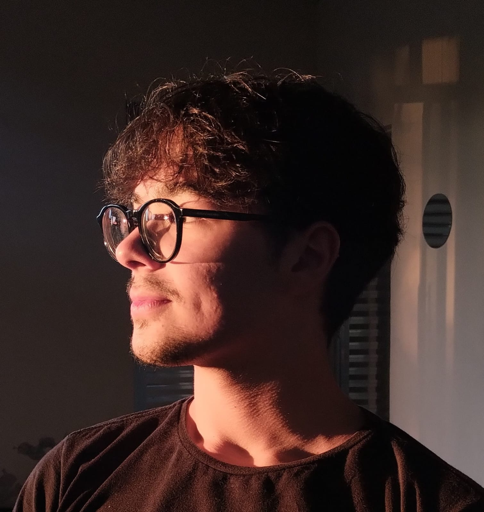

CONTATO


FORMAÇÃO
Psicologia
2019-2023
Unicamp
Gastronomia
2012-2017
Universidade FMU
HABILIDADES
Empatia
Boa Comunicação
Liderança
Atividades em grupo
Protividade
IDIOMAS
Inglês, fluente
alemão, intermediário
Bryan
Batista
SOBRE MIM
olá!! Meu nome é Bryan Batista e tenho 17 anos, sou fascinado por culinária e psicologia.
EXPERIÊNCIAS
Cozinheiro da casa.
Apreciador de música
Filho campino monte alegrense
Sou um apaixonado bobão
Tecnologia em Gastronomia.
2017-2018
Psiquiatra
Psicólogo público e privado.
Psicanalista.
2015-2017
Chef orgulhoso.
Desenvolvi habilidades em organização atendimento ao cliente e gestão de documentos. Atuei de forma proativa nos trabalhos em equipe